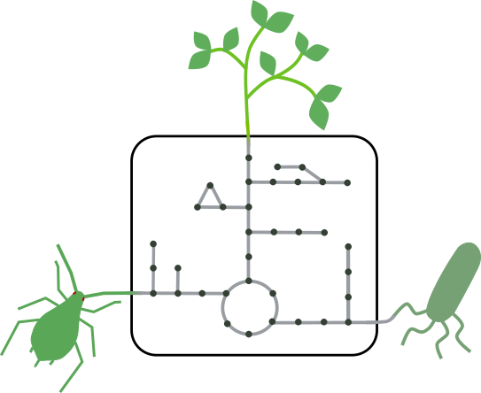

Léo Gerlin
Researcher at INRAE, working at BF2I (Functional Biology, Insects, Interactions) Lab in Lyon, France. Metabolic modeling applied to interactions in agroecosystems.
Researcher at INRAE, working at BF2I (Functional Biology, Insects, Interactions) Lab in Lyon, France. Metabolic modeling applied to interactions in agroecosystems.

I have been interested in investigating how bacteria adapt their metabolism to thrive into diverse hosts, and how it can influence the outcome of a biological interaction. I worked on plant pathogens (Xylella fastidiosa, Ralstonia solancearum) and their host, combining experiments and genome-scale metabolic modeling and studied how metabolic constraints influence the bacterial response to a drug. I am now leading research projects on the nutritional interactions around aphids, including their symbiotic bacteria and their plant host, building bridges between agroecosystems and metabolism.
Since 2017, I participate to the development of a "serious" card game, Microbioworld. The aim is to use fun gameplay and designs to make people discover scientific concepts from microbiology (antibiotic resistance, quorum sensing, secretion systems). To learn more, you can check our website!
Since 2022: Researcher (Chargé de Recherche), INRAE, BF2I Lab (UMR INSA Lyon/INRAE)
2021 - 2022: Postdoc, ETH Zurich, Institute of Molecular Systems Biology, Zampieri group
2018 - 2021: PhD, University of Toulouse, LIPME (Lab. of Plant-Microbe-Environment Interactions) (UMR INRAE/CNRS) - Supervised by Caroline Baroukh and Stéphane Genin, RAP Group
2018: MSc, Biological Engineering, INSA Toulouse
*: equal contribution
More here: Google Scholar / ORCID / HAL
Next
Simuler le métabolisme d’un insecte ravageur pour déterminer les points critiques de sa croissance embryonnaire et de ses interactions symbiotiques
Caractérisation et modélisation des Métabolismes des Lipides et des acides aminés lors de la croissance parthénogénétique du puceron du pois
Co-leaded with LaMCoS lab, team MECALIPS
Deciphering metabolic vulnerabilities of pea aphid using modeling
BF2I (Biologie Fonctionnelle, Insectes et Interactions) UMR0203 INRAE - INSA Lyon Batiment 406/Louis Pasteur 11 avenue Jean Capelle O 69621 Villeurbanne cedex France